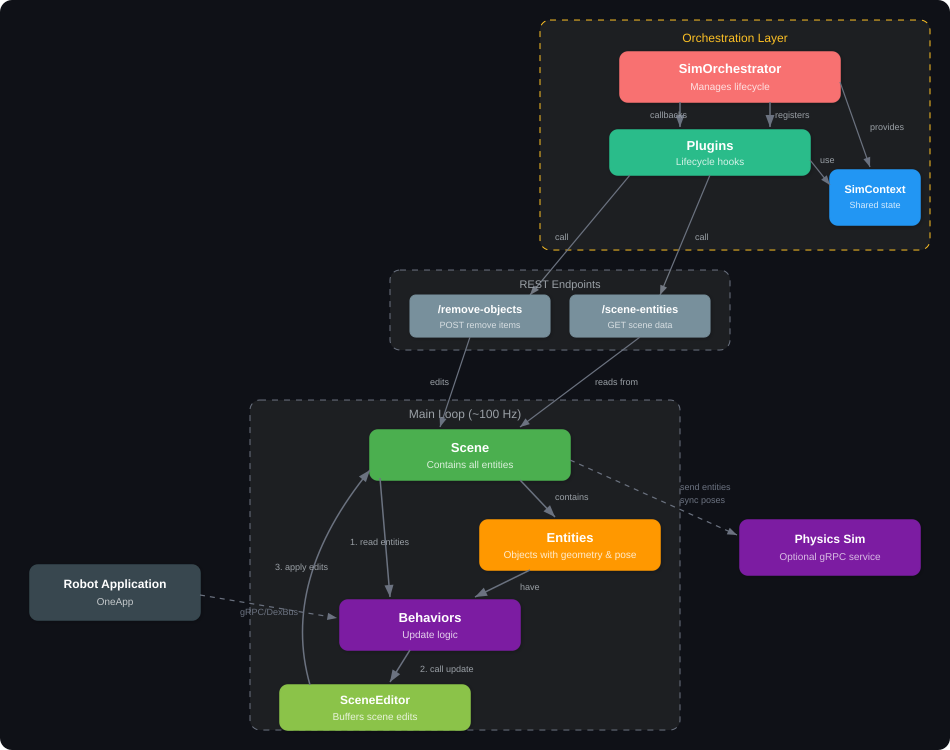
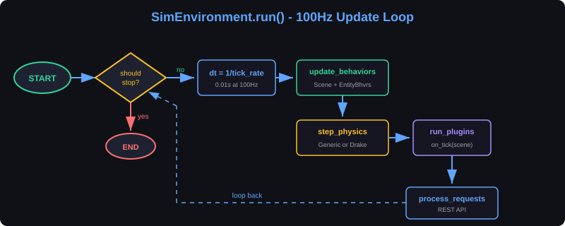
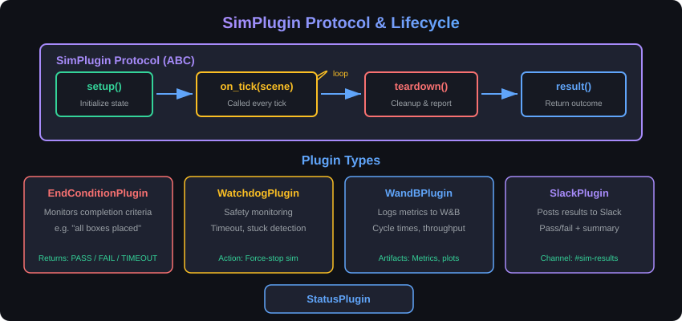
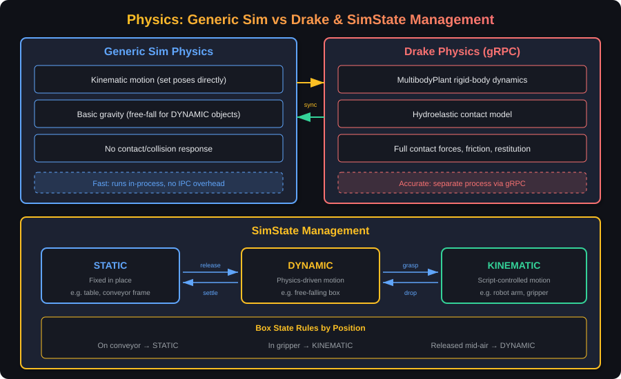

Please enter the password to view this presentation.
Varun | Dexterity Robotics
Timing: 1 minute
Senior Robotics Engineer
Dexterity.ai | Warehouse Robotics
6 years of experience developing applications, physical AI, and software infrastructure for complex robotic systems
Timing: 30 seconds
"If you can't simulate it, you can't iterate on it fast enough."
Timing: 1.5 minutes


"The update loop is intentionally simple. Complexity lives in behaviors and plugins."
Timing: 2 minutes
class EntityBehavior:
async def initialize(self, task_group, use_physics_sim=False):
"""Called when behavior is first added to
the scene. Can kick off background tasks
using the passed-in task_group."""
async def aclose(self):
"""Called when the entity this behavior is
attached to is removed from the scene."""
def update(self, entity, entities, editor, dt):
"""Called every tick of the sim main loop.
All scene updates must go through the
passed-in SceneEditor."""class SceneEditor:
"""Collects edits during a tick, applies
them atomically after all behaviors run."""
def add_entity(self, entity_data):
self._add_entity_edits.append(
AddEntity(entity_data))
def remove_entity(self, entity_id):
self._remove_entity_edits.append(
RemoveEntity(entity_id))
def update_entity(self, entity_id, update_fn):
"""Incremental update via callback.
update_fn(entity) -> updated entity"""
self._entity_updates[entity_id].append(
update_fn)
def get_edits(self) -> list[SceneEdit]:
"""Returns all pending edits: adds,
updates (via PutEntity), and removes."""Prevents mutation during iteration. Updates are composable via update_fn callbacks applied incrementally.
"Deferred mutations keep the simulation deterministic and bug-free."
Timing: 1.5 minutes
The sim exposes a REST API for scene setup, control, and monitoring. The primary endpoint is POST /add-objects, which accepts a typed scene description.
class AddObjectsRequest(RootModel):
root: list[SceneObject]
# SceneObject is a union of typed objects:
# - BoxObject (object_type: "box")
# - AuxiliaryObject (object_type: "aux")
# shape: CuboidShape | SphereShape
# | CylinderShape
# - ConveyorObject (object_type: "conveyor")
# direction, ir_beam, box_cache
# - BoxSpawnerObject (object_type: "box_spawner")
# box_sequence, repeat
# - BoxSinkObject (object_type: "box_sink")
# Common fields across objects:
# position: Vec3 (x, y, z)
# orientation_wxyz: Vec4 (w, x, y, z)
# size: Vec3 (width, height, depth)POST /add-objects
[
{
"object_type": "aux",
"shape": {
"type": "cuboid",
"position": [-0.2, 1.7, -0.15],
"orientation_wxyz": [1, 0, 0, 0],
"size": [1.22, 1.02, 0.10]
}
},
{
"object_type": "conveyor",
"position": [1.3, 0.0, -0.25],
"orientation_wxyz": [1, 0, 0, 0],
"size": [0.64, 6.0, 0.81],
"direction": [0, -0.5, 0],
"ir_beam": {
"position": [1.3, -3.0, 0.3],
"size": [0.6, 0.05, 0.05]
}
},
{
"object_type": "box_sink",
"position": [0.4, -1.5, -0.15],
"size": [2.0, 1.0, 1.0]
}
]"The REST API turned the sim from a script you run into a service you interact with."
Timing: 1.5 minutes

class SimPlugin(ABC):
"""Protocol for all simulation plugins."""
@abstractmethod
def setup(self, scene: SimScene) -> None:
"""Called once before simulation starts."""
@abstractmethod
def on_tick(self, scene: SimScene) -> None:
"""Called every simulation tick (100Hz)."""
def teardown(self, scene: SimScene) -> None:
"""Called after simulation ends. Override for cleanup."""
def result(self) -> PluginResult:
"""Return plugin outcome (PASS/FAIL/INFO).""""The plugin protocol made it trivial for other engineers to extend the sim without touching core code."
Timing: 1.5 minutes

class SimState(Enum):
STATIC = "static" # Fixed in place
DYNAMIC = "dynamic" # Physics-driven
KINEMATIC = "kinematic" # Script-controlled
# Box state rules by position:
# - On conveyor surface → STATIC
# - In robot gripper → KINEMATIC
# - Released mid-air → DYNAMIC
# - Settled on surface → STATICState transitions ensure correct physics behavior: a box in a gripper moves with the robot (KINEMATIC), but when released it falls under gravity (DYNAMIC).
"Generic sim for speed, Drake for truth. Same sim, different physics."
Timing: 1.5 minutes
/status endpoint"The CI pipeline is the customer of the sim. Everything is designed for automation."
Timing: 1.5 minutes
ReSim is a virtual testing orchestration platform that enables autonomous systems developers to run hardware, simulation, and replay tests at scale - evaluating performance across thousands of scenarios before deployment.
"Distributed sim turned testing from a manual chore into an automated pipeline."
Timing: 1.5 minutes
SimPlugin protocol and composable YAML configs make the sim extensible without modifying core code
Generic sim for speed, Drake for accuracy - same interface, different backends
Nightly sim pipelines with WandB tracking, Slack reporting, and data platform integration turned testing into a continuous process
Owned the sim architecture and the full Python-side implementation, including the update loop, scene/behavior system, plugin protocol, and REST API
Built the gRPC bridge, SimState management, and dual-representation system
Owned instrumentation of metrics, WandB and Slack integration, ReSim cloud deployment, and integration with our data platform services
"Design your sim for automation first, interactive use second."
Timing: 1 minute + Q&A